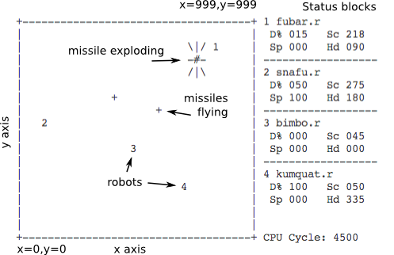

![[Compass system]](compass.png)
##### ###### ##### ###### ##### ####### ##### # # # # # # # # # # # # # # # # # # # # # # # # # ###### # # ###### # # # ##### # # # # # # # # # # # # # # # # # # # # # # # # ##### # # ##### ###### ##### # #####
(C) Copyright 1985, All rights reserved.
CROBOTS is copyrighted by:
Tom PoindexterCROBOTS is Copyright 1985 Tom Poindexter.
CROBOTS is distributed under terms of the GNU General Public License, version 2.
THIS SOFTWARE AND MANUAL ARE PROVIDED "AS IS" WITHOUT WARRANTY OF AND KIND, EITHER EXPRESSED OR IMPLIED, INCLUDING, BUT NOT LIMITED TO, THE IMPLIED WARRANTIES OF MERCHANTABILITY AND FITNESS OF PURPOSE. THE USER OF THIS SOFTWARE AND MANUAL ASSUME ALL RISKS.
CROBOTS ("see-robots") is a game based on computer programming. Unlike arcade type games which require human inputs controlling some object, all strategy in CROBOTS must be complete before the actual game begins. Game strategy is condensed into a C language program that you design and write. Your program controls a robot whose mission is to seek out, track, and destroy other robots, each running different programs. Each robot is equally equipped, and up to four robots may compete at once. CROBOTS is best played among several people, each refining their own robot program, then matching program against program.
CROBOTS consists of a C compiler, a virtual computer, and battlefield display (text graphics only, monochrome or color). The CROBOTS compiler accepts a limited (but useful) subset of the C language. The C robot programs are aided by hardware functions to scan for opponents, start and stop drive mechanisms, fire cannons, etc. After the programs are compiled and loaded into separate robots, the battle is observed. Robots moving, missiles flying and exploding, and certain status information are displayed on the screen, in real-time.
CROBOTS will most likely appeal to programmers (especially those who think they can write the "best" programs), computer game enthusiasts, people wishing to learn the C language, and those who are interested in compiler design and virtual computer interpreters.
CROBOTS does not use menus, windows, pop-ups, or any other user-friendly interface. Since the emphasis is on designing and writing robot control programs, CROBOTS is started as a compiler might be started, from the DOS command line.
CROBOTS can either run one match (single play), in which the full screen, realtime battlefield display is used, or several matches (match play), in which only the name of the winner is printed after each match. Single play is the default. Match play is intended to see how robot programs perform on the average. Match play can consume several hours of computer time depending on the number of matches and cpu cycle limit, and can be run overnight.
CROBOTS is started from the DOS prompt:
A>crobots [options] robot-program-1 [robot-program-n] [>file]
Valid options and parameters are:
-c (optional) |
Compile only, and produce virtual machine assembler code and symbol tables. |
-d (optional) |
Compile one program, and invoke machine level single step tracing. |
-mxxx (optional) |
Run a series of matches, were xxx is the number of matches.
There should be no spaces between -m and the number. If
-m is not specified, then the default is to run one match and
display the realtime battlefield. |
-lxxx (optional) |
Limit the number of machine cpu cycles per match when -m is
specified. There should be no spaces between -l and the number.
The default cycle limit is 500,000 when -m is specified |
robot-programs (required) |
The file name of the CROBOTS source program(s). Up to four files may be
specified. If only one file is specified, it will be "cloned" into another, so
that two robots (running the same program) will compete. Any file name may be
used, but for consistency use '.r' as an extension. |
>file (optional) |
Use DOS 2.0+ redirection to get a compile listing (-c option)
or to record matches (-m option). |
A>crobots robot1.r robot2.r robot3.r
A>crobots -c robot1.r >robot1.lst
A>crobots -d robot1.r
A>crobots -m50 -l200000 robot1.r robot2.r >save
The battlefield is a 1,000 by 1,000 meter square. A wall surrounds the perimeter, so that a robot running into the wall will incur damage.
The lower left corner has the coordinates x = 0, y = 0; the upper right corner has the coordinated x = 999, y = 999.
The compass system is oriented so that due east (right) is 0 degrees, 90 is north, 180 is west, 270 is south. One degree below due east is 359.
The main offensive weapons are the cannon and scanner. The cannon has a range of 700 meters. There are an unlimited number of missiles that can be fired, but a reloading factor limits the number of missiles in the air at any one time to two. The cannon is mounted on an independent turret, and therefore can fire any direction, 0-359, regardless of robot heading.
The scanner is an optical device that can instantly scan any chosen heading, 0-359. The scanner has a maximum resolution of ±10 degrees. This enables the robot to quickly scan the field at a low resolution, then use maximum resolution to pinpoint an opponent.
The only defense available are the motor drive and status registers. The motor can be engaged on any heading, 0-359, in speeds from 0-100 percent of power. There are acceleration and deceleration factors. A speed of 0 stops the motor. Turns can be negotiated at speeds of 50% and less, in any direction. Of course, the motor drive can be engaged any time, and is necessary on offense when a target is beyond the 700 meter range of the cannon.
Certain status registers provide feedback to the robot. The primary registers indicate the percent of damage, and current x and y locations on the battlefield. Another register provides current drive speed.
A robot is considered dead when the damage reaches 100%. Percent of damage is inflicted as follows:
| 2% | collision into another robot (both robots in a collision receive damage) or into a wall. A collision also causes the motor drive to disengage, and speed is reduced to 0. |
| 3% | a missile exploding within a 40 meter radius. |
| 5% | a missile exploding within a 20 meter radius. |
| 10% | a missile exploding within a 5 meter radius. |
Damage is cumulative, and cannot be repaired. However, a robot does not loose any mobility, fire potential, etc. at high damage levels. In other words, a robot at 99% damage performs equally as a robot with no damage.

Each status block shows the file name of the robot, the damage incurred, the current scan degrees, and the speed and heading. Robots are represented on the field by '1', '2', etc., according to the status block position. The number of elapsed robot cpu cycles is shown at the bottom of the status blocks.
The CROBOTS program can be stopped at any time, by using Ctrl-Break.
The robot cpu is a simple stack-oriented computer. It operates at very slow speeds (on a 4.77MHz 8088 PC with two robots running, the average speed is 270 instructions per second, .00027 mips!!). The word size is 32 bits, allowing integer values from -2,147,483,648 to 2,147,483,647. There are internal pointer registers that manage stack usage, but are not accessible from a robot program. The same is true for an implicit accumulator.
The maximum code space is 1,000 instructions. All instructions are equal in length. The maximum stack size is 500 words, which is used for data and function call/returns. The stack grows upward for data usage, and downward (from the end) for function call/returns. Three words are used for each function call, and are release upon the function return. The data portion and call/return portion are managed by separate internal stack pointers.
If the data stack pointer and call/return stack pointer collide, a stack overflow occurs. In this case, the robot is restarted at the 'main' function, with the stack reset to all zeroes.
For more information, see the section on machine instructions and theory.
The CROBOTS compiler accepts a limited subset of the C language. There is no provision for separate compilation, i.e., all modules of a program must be in one file. No preprocessor is provided for "#define", "#include", etc. Identifiers are significant to 7 characters, although any length may be used. The compiled machine code is loaded into the robot cpu, and cannot be saved.
Major language features missing from K&R are: floating point variables, structures, unions, pointers, initializers, arrays, character data, typedefs, for statement, do..while statement, switch..case statement, break, continue, gotos and labels, ternary and comma operators, octal and hexadecimal constants, no parameters to main(), and all preprocessor directives. My apologies to "The C Programming Language" by Brian W. Kernighan and Dennis M. Ritchie, Prenctice-Hall, 1978.
The language features that are present are entirely suitable for writing robot control programs. Basic programming constructs of if..then..else, while, and function calls can be used freely. Full expression evaluation is also provided, so that statements such as:
if ((x = func1(y,1,++z,func2(c))) > 0) a = 0; else a = x;
are perfectly legal. Ifs and whiles may be nested, and recursion is supported. Variables declared outside a function definition are global in scope, whereas variables declared inside a function definition are local to that function.
The following keywords are recognized:
/* ... */ | comments cannot be nested |
any decimal digits, optionally preceded with a "-" |
int | variable declare |
long | same as int |
auto | default storage scope, optional |
register | legal, but ignored, same as auto |
function (parms,.....) | function definition |
if (expr) STMT else STMT |
while (expr) STMT |
return | return |
return expr | return a with value |
= | assignment |
>>= | assignment shift right |
<<= | assignment shift left |
+= | assignment addition |
-= | assignment subtraction |
*= | assignment multiplication |
/= | assignment division |
%= | assignment modulo |
&= | assignment and |
^= | assignment exclusive or |
|= | assignment inclusive or |
>> | shift right |
<< | shift left |
& | and |
! | unary not |
~ | unary one's complement |
^ | exclusive or |
| | inclusive or |
++ | prefix increment, see derivations |
-- | prefix decrement, see derivations |
&& | logical and |
|| | logical or |
<= | logical less than or equal |
>= | logical greater than or equal |
== | logical equal |
!= | logical not equal |
< | logical less than |
> | logical greater than |
- | subtraction or unary negation |
+ | addition |
* | multiplication |
/ | division |
% | modulo |
; | statement terminator or null statement |
{ } | compound statement |
, | parameter separator in function definition or call |
( ) | expression or function definition or call |
Precedence and order of evaluation are the same as in K&R.
| Operator | Associativity |
() |
left to right |
! ~ ++ -- - |
right to left |
* / % |
left to right |
+ - |
" " " |
<< >> |
" " " |
< <= => > |
" " " |
== != |
" " " |
& |
" " " |
^ |
" " " |
| |
" " " |
&& |
" " " |
|| |
" " " |
= -= += etc. |
right to left |
Major deviations from K&R:
var++ or var--)
are recognized, but the result is the same as prefix increment/decrement
(++var).
The compiler has no error recovery and will stop on the first error found. Sorry. Warning messages do not stop the compiler.
Error messages
"syntax error" - Any input that results in improper C syntax will yield "syntax error", with an indicator pointing to the unrecognizable input.
"instruction space exceeded" - compiler tried to generate more than 1000 machine instructions.
"symbol pool exceeded" - the maximum local variable, external variable, or function definition symbol table was exceeded.
"function referenced but not found" - a function was referenced that was not defined in the input file or is not an intrinsic function.
"main not defined" - the input file did not define a 'main()' function.
"function definition same as intrinsic" - a function was defined with the same name as an intrinsic function, which are reserved.
"if nest level exceeded" - more than 16 'if's were nested.
"while nest level exceeded" - more than 16 'while's were nested.
"yacc stack overflow" - the compiler's parser overflowed, probably due to complex expressions and/or extreme nesting.
Warning messages
These messages will not cause the compiler to fail, but may cause the program to executed unexpectedly.
"unsupported initializer" - variable declares cannot include an initializer. For future releases.
"unsupported break" - the 'break' statement was found and ignored. For future releases
"n postfix operators" - postfix increment or decrement operators were used, and are coerced into prefix expressions.
"n undeclared variables" - one or more variables were implicitly declared.
"code utilization: n%" - reports the capacity of machine instructions generated.
The intrinsic function library provides machine level control and certain arithmetic functions. These functions do not consume any of the program code space or data stack, except for the three words for call/return sequences. No explicit linking is required to use any intrinsic function.
The scan() function invokes the robot's scanner, at a specified degree and resolution. scan() returns 0 if no robots are within the scan range or a positive integer representing the range to the closest robot. Degree should be within the range 0-359, otherwise degree is forced into 0-359 by a modulo 360 operation, and made positive if necessary. Resolution controls the scanner's sensing resolution, up to +/- 10 degrees.
Examples: range = scan(45,0); /* scan 45, with no variance */ range = scan(365,10); /* scans the range from 355 to 15 */
The cannon() function fires a missile heading a specified range and direction. cannon() returns 1 (true) if a missile was fired, or 0 (false) if the cannon is reloading. Degree is forced into the range 0-359 as in scan(). Range can be 0-700, with greater ranges truncated to 700.
Examples:
degree = 45; /* set a direction to test */
if ((range=scan(degree,2)) > 0) /* see if a target is there */
cannon(degree,range); /* fire a missile */
The drive() function activates the robot's drive mechanism, on a specified heading and speed. Degree is forced into the range 0-359 as in scan(). Speed is expressed as a percent, with 100 as maximum. A speed of 0 disengages the drive. Changes in direction can be negotiated at speeds of less than 50 percent.
Examples: drive(0,100); /* head due east, at maximum speed */ drive(90,0); /* stop motion */
The damage() function returns the current amount of damage incurred. damage() takes no arguments, and returns the percent of damage, 0-99. (100 percent damage means the robot is completely disabled, thus no longer running!)
Examples:
d = damage(); /* save current state */
; ; ; /* other instructions */
if (d != damage()) /* compare current state to prior state */
{
drive(90,100); /* robot has been hit, start moving */
d = damage(); /* get current damage again */
}
The speed() function returns the current speed of the robot. speed() takes no arguments, and returns the percent of speed, 0-100. Note that speed() may not always be the same as the last drive(), because of acceleration and deceleration.
Examples:
drive(270,100); /* start drive, due south */
; ; ; /* other instructions */
if (speed() == 0) /* check current speed */
{
drive(90,20); /* ran into the south wall, or another robot */
}
The loc_x() function returns the robot's current x axis location. loc_x() takes no arguments, and returns 0-999. The loc_y() function is similar to loc_x(), but returns the current y axis position.
Examples:
drive (180,50); /* start heading for west wall */
while (loc_x() > 20)
; /* do nothing until we are close */
drive (180,0); /* stop drive */
The rand() function returns a random number between 0 and limit, up to 32767.
Examples: degree = rand(360); /* pick a random starting point */ range = scan(degree,0); /* and scan */
The sqrt() returns the square root of a number. Number is made positive, if necessary.
Examples: x = x1 - x2; /* compute the classical distance formula */ y = y1 - y2; /* between two points (x1,y1) (x2,y2) */ distance = sqrt((x*x) - (y*y));
These functions provide trigonometric values. sin(), cos(), and tan(), take a degree argument, 0-359, and returns the trigonometric value times 100,000. The scaling is necessary since the CROBOT cpu is an integer only machine, and trig values are between 0.0 and 1.0. atan() takes a ratio argument that has been scaled up by 100,000, and returns a degree value, between -90 and +90. The resulting calculation should not be scaled to the actual value until the final operation, as not to lose accuracy. See programming examples for usage.
CROBOTS programs are not unlike other C programs. The minimum CROBOTS program consist of a function named "main". Additionally, other functions can be defined, along with external variables.
Four CROBOTS are provided as examples:
rabbit.r is a simple robot that merely runs around the field, randomly.
counter.r uses a slow incremental scan to locate enemies. Moves when hit.
rook.r restricts its scanning to the four compass points. Results in a very fast scan.
sniper.r is the most complex and devastating of the
sample robots. It sits in a corner so that it only has to scan 90 degrees.
Sniper's distance() and plot_course() routines are quite handy. Save them for
your programs. Also, note that the main scan routine will "back up" a few
degrees after a target has been found and fired upon. This should catch robots
trying to flee away from the direction you are scanning. If the target moves the
other way, the normal scan increment will find it.
This information is provided if you need to use the debug facility, or are curious about the virtual machine interpreter. Don't bother reading this section if you not so inclined; it is not needed for normal play.
That stack is controlled implicitly by several pointers. Stack pointers are not accessible through machine instructions. Most instructions will either push data onto the stack, or pop data off the stack. The stack is used from the bottom up (low memory) for data and temporary storage, and is used from the top down (high memory) for saving stack pointers and the program counter on function call/return.
External (global) variables are allocated at the very bottom of the stack, and the local mark pointer for 'main' starts just after the externals. External variables are addressed from the beginning of the stack, by offset.
When a function is called (including 'main'), the stack pointer is marked (local mark) and is increased by the number of local variables needed for that function. Local variables are addressed relative to the local mark, by offsets. All calculations, function calls, and constants are pushed on and popped off the stack as needed (temporary mark or top of stack).
A function call also saves its current stack pointers (local variable mark and frame mark) and program counter. This return information grows from the top down.
Arguments are passed to functions by value. The first argument in a function call becomes the first local variable for the called function. Consider the following:
main() { /* main has three local variables: */
int a, b, c;
....;
sub1 (a,b/2,c+1); /* call sub1, and pass arguments */
....;
}
sub1 (x,y,z) /* sub1 takes three parameters and */
int x, y, z; { /* has one local variable */
int result;
result = x + y + z;
return (result);
}
The main() function allocates three local variables on the stack, sets its local mark at 'a', and sets the temporary stack pointer beyond the locals. Just before sub1() is called, the value of 'a' is pushed, followed by the result of 'b/2', and 'c+1'. When sub1() is called, it sets its local mark where the value of 'a' is, so that 'a' is know as 'x' in func1(), likewise 'b/2' is known as 'y' and 'c+1' is known as 'z'. Sub1() also allocates one more word for 'result', and sets the temporary mark after the storage for 'result'.
The following diagram illustrates the stack usage:
┌────────────┐ ← end of stack, high memory │main return │ ← return info for main ├────────────┤ (frame,ip,local mark) │sub1 return │ ← return info for sub1 ├────────────┤ (etc.) │ ↓ │ │ │ ← additional function call return │ │ info grow downwards │ │ │ │ │ │ ← additional function calls and │ ↑ │ expressions grow upwards │expressions │ ├────────────┤ ← temporary mark (top of stack) │sub1 locals │ ├────────────┤ ← local mark: sub1 function │main locals │ ├────────────┤ ← local mark: main function │ │ │ Externals │ │ │ └────────────┘ ← beginning of stack
The link list is a list built by the compiler that contains the names and link information of the functions within the program. The link information contains the starting location of the function within the code, the number of parameters, and the number of other local variables within the function. The link list cannot be accessed by the user program.
The CROBOTS cpu has 10 instructions. Each instruction occupies the same amount of storage, with or without operands.
FETCH offset (external | local) - Fetch will retrieve a word from either the external variable pool or the local variable pool and push it onto the stack. The offset has its high-bit set (or'ed with 0x8000) if it is an external (offset from the beginning of the stack), otherwise it is a local (offset from the local variable mark). See STORE.
STORE offset (external | local), opcode - Store pops the top two items, applies the arithmetic opcode to the two operands, pushes the result on the top of the stack and stores it in the variable referenced by the offset. Offsets are either external or local, according to the method described in Fetch. The result of the opcode is left on the stack. See FETCH and BINOP.
CONST k - Const will push a constant onto the stack.
BINOP opcode - Binop will pop the top two items as top of stack = y, next to top of stack as x, apply the arithmetic opcode as (x opcode y), and push the result on the stack. Opcodes are decimal representations of 'C' operators such as '+', '/', '>=', etc. See STORE.
FCALL link-offset - Fcall performs a high level function call facility. The link-offset operand specifies an entry in the link list table. Fcall pushes its return information: the next instruction counter and the current local variable mark. A new local variable mark and temporary mark (top of stack pointer) is set. The cpu then branches to the first instruction of the function. See RETSUB and FRAME.
RETSUB - Retsub returns from a function, leaving the return value on the top of the stack. Retsub restores the previous local variable pool, the next instruction counter, and re-adjusts the stack frame to the point just before the call. The C compiler generates code to return a dummy value if the function does not explicitly return one. See FCALL and FRAME.
BRANCH instruction - Branch pops the top of the stack and branches to the instruction if the value is zero. The next sequential instruction is executed if the value is anything other than zero.
CHOP - Chop discards the top of the stack by popping it into oblivion.
FRAME - Frame facilitates fcall/retsub by saving the current top of stack pointer (temporary mark) in anticipation of a fcall statement. The top of stack pointer is saved in the call/return stack as a frame marker. See FCALL and RETSUB.
NOP - No operation. Is used as a mark indicating the end of code.
Debug mode is used to trace by single stepping machine instructions. Use this only if you need to see your program execute, or are just curious.
First, get a listing on paper of a compile with full information by using the
-c option:
A>crobots -c yourpgm.r >prn:
Next, start CROBOTS again with the -d flag:
A>crobots -d yourprm.r
Your robot will be placed randomly in the field, and a target robot will be placed at the center of the field (x=500,y=500) so your robot program can find and shoot at a target.
The virtual machine interpreter will single step through your program (machine instructions, that is). At every instruction, an machine instruction is disassembled, and the top of stack pointer and value are printed. The top of stack and value are after the results of the instruction. Other information may also be printed, such as function calls searching the link list, etc.
On every step, you are prompted "d,h,q,<CR>:". Entering 'd' will dump external and local variable pools, as well as vital information of your robot: coordinates, heading, speed, damage, etc., and the status of any missiles your robot may have fired. Entering 'h' will simulate your robot taking a 10% damage hit, so you can check damage detection, etc. Entering 'q' will quit the program immediately, and return you to DOS. A carriage return alone will continue the stepping process. All responses ('d', 'h', or 'q') should be in lower case only. You should refer to the compile listing for offsets into the external and local variable pools, C code, etc.
CROBOTS is written entirely in 'C'. The compiler section was developed with the aid of the Unix* (TM) programs 'yacc' and 'lex'. Yacc (yet another compiler-compiler) accepts a 'grammar', which describes the CROBOTS 'C' language. Yacc produces a 'C' function known as a parser. The parser is the heart of the compiler, recognizing valid 'C' constructs. Lex (lexical analyzer) accepts a list of token combinations, and produces a 'C' function to scan the compiler input for the tokens. The yacc generated parser, yyparse(), repeatedly calls the lex generated analyzer, yylex(), to process the source program. The initial screen display routines were developed with the 'curses' screen library.
The 'C' source code was then ported to MS-DOS** (TM), and recompiled using the Lattice*** (TM) 2.15E compiler, using the 'small' memory model. The screen display functions were modified to use 'int86()', accessing the rom INT 10H cursor positioning functions in the IBM-PC bios.
* Unix is a trademark of Bell Telephone Laboratories.
** MS-DOS is a trademark of Microsoft, Inc.
*** Lattice is a trademark of Lattice, Inc.
**** IBM is a trademark of International Business Machines, Inc.
HTML version last modified: 21 October, 2013
Formatted for HTML by: Neil Fraser